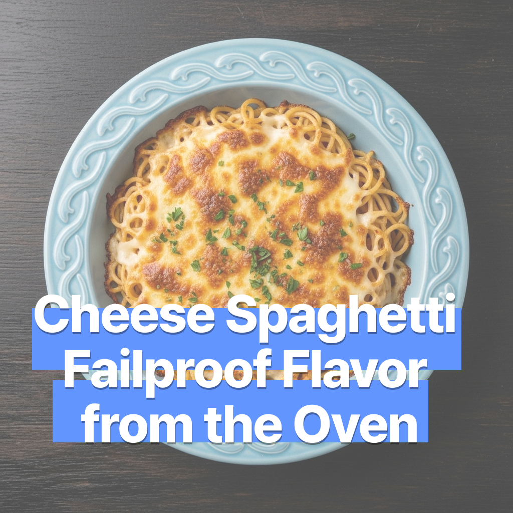

치즈 스파게티 – 오븐으로 만든 실패 없는 맛
2025-07-16

치즈 스파게티 – 오븐으로 만든 실패 없는 맛
이 요리는 익숙한 모습으로 기억됩니다. 그리고 그 익숙한만큼 우리에게 친근한 맛을 선물합니다. 노릇하게 구워진 겉면과 상큼한 소스가 어우러진 치즈 스파게티. 오븐에게 오늘의 식사를 맡겨보세요.
🛒 재료 (2인분 기준)
- 스파게티 면 – 160~180g
- 토마토소스 – 1컵
- 모짜렐라 치즈 – 80~100g
- 파마산 치즈 (간 것) – 2큰술
- 다진 마늘 – 1작은술
- 양파 – ¼개 (다진 것)
- 베이컨 또는 햄 – 50g (선택)
- 올리브유 – 1큰술
- 소금·후추 – 약간
- 생바질 또는 파슬리 (선택)
- 오븐용 팬 또는 내열 그릇
🔪 재료 손질
면은 끓는 소금물에 넣고 8~10분간 알덴테로 삶은 후 물기를 빼주세요.
양파와 마늘은 다지고, 베이컨은 작게 썰어 팬에 살짝 볶으면 향이 깊어져요.
오븐은 미리 180℃로 예열해 주세요.
🍳 만드는 법
- 삶은 면과 볶은 재료를 섞어 볼에 담습니다.
- 토마토소스를 넣고 골고루 버무린 뒤 소금·후추로 간을 조절하세요.
- 오븐용 그릇에 담고 모짜렐라 치즈와 파마산 치즈를 넉넉히 올립니다.
- 예열된 오븐에 넣고 180℃에서 약 15~20분간 치즈가 녹고 노릇해질 때까지 구워줍니다.
- 꺼낸 후 생바질이나 파슬리를 뿌리면 향까지 완성!
⚠️ 조리 시 주의사항
치즈는 구울수록 타기 쉬우니 중간에 한 번 상태를 확인해주세요.
조리 후 오븐 그릇은 뜨거우므로 화상에 주의하세요.
치즈 양을 과하게 넣으면 넘칠 수 있어요, 팬 높이를 고려해 주세요.
💡 팁
- 토마토소스는 시판 제품도 좋지만 직접 끓이면 향과 감칠맛이 더 풍부해져요.
- 치즈는 모짜렐라 외에 체다나 고르곤졸라도 잘 어울립니다.
- 오븐 대신 에어프라이어에서도 가능—내열 용기를 사용해 160~170℃에서 15분.
- 남은 스파게티는 팬에 살짝 볶아 리조또처럼 즐길 수도 있어요.
우리는 이 맛을 알고 있습니다. 더 원하는 방향으로 조리해보세요.